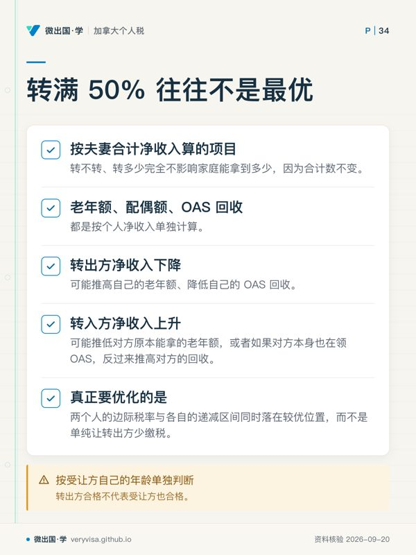
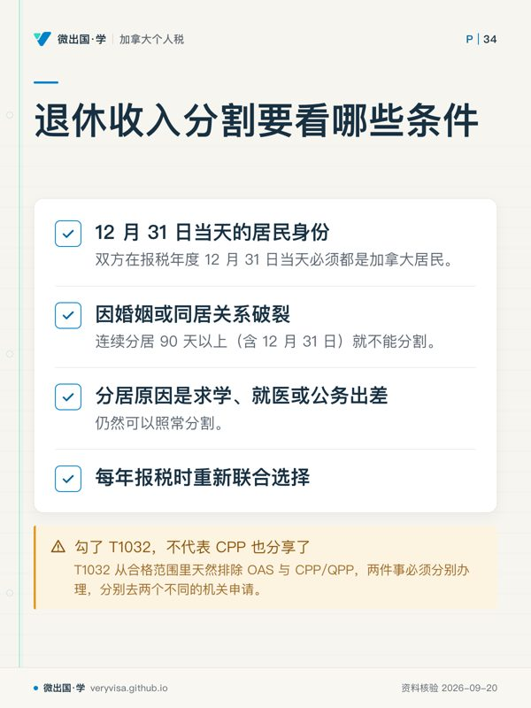
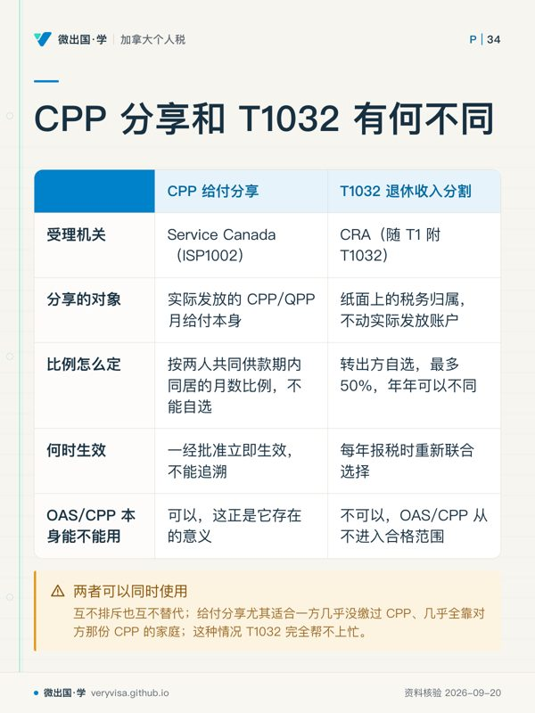

核实日期：2026-09-05｜本页口径：2026 税年（2027 年 2–4 月申报）。本页大量数字来自 CRA 与省府现行页，逐年指数化的门槛与十几年未动的长青数字并存，180 天复核一次（下次 2027-01-31）；出处见 frontmatter
ws。
一位纳税人一旦跨过 65 岁，报税表上至少有三处规则会跟着换挡：能不能拿老年额（line 30100）、养老金收入额（line 31400）认不认某一笔收入、退休收入分割（T1032）能分多少。这三处换挡各自挂在不同的法条上，互不隶属，却经常被读者当成同一件事记。本页只讲这三个开关，以及围着它们转的一圈周边规则——GIS 要不要报、CPP 给付分享和 T1032 分割怎么分工、OAS 回收线怎么用 T1213(OAS) 缓一缓、无障碍改造与残障额怎么报最不吃亏。养老金收入本身该落哪张 slip、哪一行，以及 RRIF 71 岁那一年的操作细节，见 ca-core-05-pension-investment-income 与 ca-invest-03-rrsp-tfsa-fhsa，本页不重复，只讲那两页没有展开的部分。读完你应该能做到：算出任意净收入下的老年额；判断一笔养老金收入未满 65 岁时算不算数；看懂 T1032 转多少才是家庭最优而不是简单转满 50%；分清 CPP 给付分享和退休收入分割该用哪一个；以及知道无障碍改造、残障额、护理院费用这几张表之间哪些能叠加、哪些不能。
一、制度设计与底层逻辑：为什么偏偏是 65 岁
《所得税法》里没有一条统一的「65 岁条款」，而是好几条互不相干的条文各自选中了 65 岁这个年龄——这不是巧合，是三种完全不同的立法动机凑到了同一个数字上。老年额（s.118(2)）的动机是收入能力补偿：退休后收入通常来自养老金与投资，不再享有在职者的加拿大就业量额（Canada employment amount）与部分雇主福利，老年额是对这块空缺的部分补偿，同时按净收入递减，只补给真正需要的人，高净值退休者拿不到。养老金收入额（s.118(3)）与「合格养老金收入」的定义（s.118(7)）动机不同，是防止套利：如果任何年龄的 RRIF 提款都能拿 $2,000 抵免，一个还在工作、尚未退休的人只要把小额 RRSP 转成 RRIF 逐年提一点，就能年年凭空多一项抵免——立法者用「未满 65 岁只认雇主养老金定期给付」把这条路堵死，只有真正到了法定退休年龄，或者因配偶身故被迫接手养老金收入，才放开 RRIF/RRSP 年金这一类。退休收入分割（T1032，s.60.03）的动机又不同，是缓解单一收入来源退休家庭的累进税负（详见第五节），它对转出方的年龄完全不设限，只卡「收入本身合不合格」。
三条规则背后站着三个不完全一致的利益方。纳税人要的是把家庭总税负降到最低；CRA 要防的是同一笔递延多年的注册账户资金,被包装成看似合格的收入去骗抵免或骗分割;而 ESDC（老年保障金 OAS、保障收入补助 GIS、CPP 的行政机关）站在第三个角度——它管的是普惠与济贫两条线，OAS 靠居住年限普惠发放但对高收入者按 15% 回收，GIS 专门济贫且完全按收入递减，这两条线都不关心纳税人内部怎么分钱，只关心纳税人真实的、经年度核实的净收入。这也是为什么本页反复出现「按个人净收入算」与「按家庭合计净收入算」的区分——同一个动作（比如 T1032 分割）在 CRA 的抵免体系里可能重新分配了税负，在 ESDC 的普惠/济贫体系里却完全不影响家庭合计能拿到多少。
法律后果这一侧，三件事最容易被低估。第一，残障额（disability amount, line 31600/31800）以 Form T2201 的CRA 事前核准为前提，这是一次行政决定，不随年度报税重新判断，当年没有已核准的 T2201 就无法首次申报，只能先按无该项申报、核准后再申请调整。第二，OAS 回收税算错不会让人「侥幸躲过」，它在年度评税时用当年实际净收入重新核算，多扣的会退、少扣的会连本带利追缴。第三，T1032 的联合选择一旦错报（比如把 OAS/CPP 也算进合格收入），错误部分会被评税时剔除，两个人的报税表都要跟着重新算，情节严重的还会触发利息。
二、2026 税年现行规则与数字：三个开关分别怎么拨
2.1 老年额（line 30100）：一个满足条件就自动打开、按净收入关掉的抵免
任何在报税年度 12 月 31 日之前年满 65 岁的纳税人，都可以申报联邦老年额，金额随净收入线性递减到零。三年一张表（CRA；完整版另见 kb-02-numbers-2026）：
| 项目 | 2024 税年（考试口径） | 2025 税年 | 2026 税年（现行） | 状态 |
|---|---|---|---|---|
| 老年额上限 | 8,790 元 | 9,028 元 | 9,208 元 | 已生效 |
| 递减起点（净收入） | 44,325 元 | 45,522 元 | 46,432 元 | 已生效 |
| 递减比例 | 净收入超出部分的 15% | 同左 | 同左 | 长青未变 |
| 完全归零（净收入） | $102,925 | 约 $105,709 | 约 $107,819 | 按公式推算 |
计算方式是「上限 − 15% × (净收入 − 递减起点)」，两者取较大的零。举例：某纳税人 2026 税年 65 岁、净收入 $55,000，老年额 ＝ 9,208 元 − 15% × ($55,000 − 46,432 元) ＝ 9,208 元 − $1,285 ＝ $7,923（示例）。这项抵免只看联邦一层；BC 省表有自己独立指数化的省级老年额（2026 税年 5,927 元），走法与门槛都和联邦各算各的，详见 ca-core-05-pension-investment-income 第四节。
2.2 养老金收入额（line 31400）与退休收入分割（T1032）：合格范围与分多少
$2,000 上限本身长青不变、合格范围按 65 岁分两套的基础规则，ca-core-05-pension-investment-income 第 2.3 节已经讲过，这里不重复，只补两块那一页没展开的内容。
合格与不合格的完整边界（CRA（1、2））：未满 65 岁时，合格的只有雇主注册养老金计划（RPP）的人寿年金定期给付,以及因配偶或普通法伴侣身故而收到的养老金/RRIF/RRSP 年金/合格退休补偿安排款项;年满 65 岁（当年 12 月 31 日之前）后，RRIF 提款（含生活收入基金）、RRSP 年金给付、合格注册计划的年金支付才整体转为合格。永远不合格的清单很短但很容易踩：老年保障金（OAS）本身、CPP/QPP 给付、因税收协定在加拿大免税且已在 line 25600 扣除的外国养老金、美国 IRA 收入、以及已经从 RRIF 转出到另一个 RRSP/RRIF/年金账户的那部分金额——这最后一条容易被忽略：钱从一个registered账户挪到另一个，账面上仍在 line 11500 上出现过,但因为是账户间转移而不是发放给本人花用的收入，不合格。
T1032 该转多少才是最优，而不是转满 50%。 CRA 自己的说明把「按个人净收入计算的福利」与「按家庭合计净收入计算的福利」明确分成了两类（CRA）：像 Canada Groceries and Essentials Benefit（CGEB，2026 年 7 月起取代原 GST/HST 抵免）这类按夫妻合计净收入算的项目，转不转、转多少完全不影响家庭能拿到多少，因为分割只是把同一笔钱在两个人之间挪位置，合计数不变。但老年额、配偶额、OAS 回收这几项都是按个人净收入单独计算——转出方净收入下降，可能推高自己的老年额、降低自己的 OAS 回收；转入方净收入上升，则可能推低对方原本能拿的老年额，或者如果对方本身也在领 OAS，反过来推高对方的回收。这正是考试口径里那句「转满 50% 往往不是最优选择」的官方依据：真正要优化的是两个人的边际税率与各自的递减区间同时落在较优位置，而不是单纯让转出方少缴税。还有一条容易漏看的边界条件：受让方能不能在自己的 line 31400 上申报这笔转入的养老金收入额，要按受让方自己的年龄单独判断——转出方合格不代表受让方也合格，这一点在 Form T1032 第四步的附注里单独有规定，两个人的资格不是同一件事的两面。
分割的资格条件里还有一条常被忽略的例外：双方在报税年度 12 月 31 日当天必须都是加拿大居民；如果是因婚姻或同居关系破裂、连续分居 90 天以上（含 12 月 31 日）就不能分割了，但如果分居原因是求学、就医或公务出差，仍然可以照常分割（CRA）——这条例外救回了不少「异地不代表分手」的家庭。
⚠️
「我们已经在做退休收入分割了」不代表 CPP 也分享了
很多家庭在报税软件里勾了 T1032 联合选择,就以为「养老金已经均分掉了」,却不知道 CPP 那部分从头到尾没有动过——T1032 从合格范围里天然排除 OAS 与 CPP/QPP,两件事必须分别办理,分别去两个不同的机关申请（详见 2.5）。
2.3 OAS 回收与 T1213(OAS)：门槛不能改，但预扣的时点可以调
OAS 回收门槛的三列表与「CRA/ESDC 两页互相打架」的活例，ca-core-05-pension-investment-income 第 2.1 节已经写过（2026 税年门槛 95,323 元，CRA），这里只讲那一节没讲的操作工具：Form T1213OAS（CRA）。这张表解决的是预扣的时点，不是回收本身。默认情况下，7 月起新一年度的 OAS 回收预扣税按上一年净收入推算；如果纳税人当年收入已经明显下降——刚退休、RRIF 停止大额提取、去年一次性资本利得已经消化完——可以提前填 T1213OAS 向 CRA 申请按当年预计收入减少预扣，避免现金流被多扣一整年、等报税季再退回来。它不能免掉回收税本身，年终评税时仍按当年实际净收入重新核算，多退少补；2026 税年的表格版本号（t1213oas-fill-26e.pdf）在 2026-09-03 刚更新过，是这门课少数几个「表格版本号本身就是新鲜度证据」的例子。
2.4 GIS：免税，但免税靠的是先报后抵，不是不用报
保障收入补助（Guaranteed Income Supplement, GIS）官方定性为「免税」（tax-free），但这句话背后有一套具体的记账机制（ESDC、CRA）：GIS 走 line 14600（净联邦补助）报进 line 14700，并入 line 15000 总收入，再在 line 25000 用「其他给付扣除」全额扣回，两步相抵，净税负通常为零。「通常」两个字有一个门槛：CRA 的计算图表规定，只有当纳税人的计算结果不超过 OAS 回收门槛时才能全额扣回，超过门槛要按图表打折——现实中因为 GIS 本身就是按净收入递减发放的济贫项目，能拿到 GIS 的人净收入通常远低于这道门槛，这条「打折」条款很少真正触发，但「GIS 绝对不产生税负」这句话不是无条件成立。真正影响绝大多数 GIS 领取者的是另一件事：GIS 续领与报税深度绑定——如果没有按时申报当年联邦税表，GIS 付款可能会被暂停或减少，Service Canada 依赖报税信息来核实每年的续领资格，报税晚了或漏报了，比算错税本身更容易导致钱领不到手。2026-09 现行月度上限：单身 / 鳏寡 / 离异每月最高 $1,123.17，配偶也领全额 OAS 者每月最高 $676.09。
2.5 CPP 给付分享（Pension Sharing）与 T1032 退休收入分割：两套并行的制度，别用错申请入口

这是本页最容易被读者当成同一件事的两个概念，官方原文直接写明「pension sharing is not the same as Canada Revenue Agency's pension income splitting」（ESDC）——两者从机构、申请路径到计算基础完全不同：
| 维度 | CPP 给付分享 | T1032 退休收入分割 |
|---|---|---|
| 受理机关 | Service Canada（ISP1002 申请表） | CRA（报税时随 T1 附 T1032） |
| 分享的对象 | 实际发放的 CPP/QPP 月给付本身 | 纸面上的税务归属，不动实际发放账户 |
| 比例怎么定 | 按两人「共同供款期」内同居的月数比例，不能自选 | 转出方自选，最多 50%，年年可以不同 |
| 何时生效 | 一经批准立即生效，不能追溯 | 每年报税时重新联合选择 |
| 家庭总额是否变化 | 不变——只是同一笔钱换了接收账户 | 不变——只是同一笔收入换了纳税人 |
| OAS/CPP 本身能不能用 | 可以，这正是它存在的意义 | 不可以，OAS/CPP 从不进入合格范围 |
两者可以同时使用：CPP 走给付分享把实际到手的月给付重新分配，其余合格养老金（RPP 定期给付、RRIF 提款等）走 T1032，互不排斥也互不替代。给付分享尤其适合「一方几乎没缴过 CPP、几乎全靠对方那份 CPP」的家庭——这种情况 T1032 完全帮不上忙，因为 CPP 本身从不合格，只有把给付本身真正分掉才能让低收入一方的报税表上出现属于自己的养老收入。
2.6 老年人家庭无障碍改造：HATC、MHRTC 与 BC 的第三套抵免，三本账不是一本账
无障碍改造这块最容易被读者以为只有一项抵免，实际同时存在三套互相独立的制度：
联邦家居无障碍改造抵免（HATC，line 31285）：不可退还的非退还抵免，合格支出上限 20,000 元，这个上限自 2022 税年起就没变过（CRA）。2025 及以前税年，同一笔改造支出如果同时满足医疗费用抵免（METC）的条件，可以两项都报；2026 税年起，Budget 2025 的实施法已把「已在 METC 下申报的支出」明确排除出 HATC 的合格支出定义，同一笔钱只能二选一（加拿大财政部、Parliament of Canada、CRA）——这是一条有时间窗口的规划提醒：2025 年底前完工并付款的改造仍按旧规双报，跨年项目要算清楚哪一笔落在哪一年。
多代同堂改造抵免（MHRTC，line 45355）：可退还（税额不够也能拿到现金），专门针对为了让老人或残障家人与亲属同住而新建的自建套房，一项合格翻修的合格支出共享上限 50,000 元，抵免率挂钩联邦最低税阶（ITA s.122.92）。同一合格个人终身只能享用一项合格翻修，不能每年重报上限。适用比例随 的最低税率调整：2024为15%、2025为14.5%、2026为14%，这是税率修法，不能称为通胀指数化（CRA）：
| 税年 | 联邦最低税阶 | MHRTC 抵免率 | 50,000 元 上限对应的抵免额 | 状态 |
|---|---|---|---|---|
| 2024 税年（考试口径） | 15% | 15% | $7,500 | 已生效 |
| 2025 税年 | 14.5%（混合率） | 14.5%（CRA 页现行标注） | $7,250 | 已生效 |
| 2026 税年 | 14% | 按机制应为 14% | 按机制应为 $7,000 | 推算——CRA 该页抓取时（2026-09-05）页头仍标 2025 税年，尚未滚动更新 |
BC 有第三套完全独立的省级抵免：老年人及残障人士家居翻新抵免（Home Renovation Tax Credit for Seniors and Persons with Disabilities），可退还，上限 1,000 元（合格支出 10,000 元 的 10%），走 Schedule BC(S12) → BC479 表 box 60480（BC 省政府）。BC非老年残障对象须符合ITA118.3(1)的残障资格；因看护/护理院医疗费互斥而未申领DTC，只免除(c)款限制，不免除残障认定本身。合格翻新支出可按BC ITA146(2)与医疗费抵免并用，但联邦HATC/MHRTC须各按自身规则判断。（BC 省政府）
2.7 残障额、看护费与护理院费用：能不能并用，取决于一个 10,000 元 的开关
残障额（disability amount）以 CRA 事前核准的 Form T2201 为前提，申报在 line 31600（本人）或 line 31800（从受抚养人转移）；这个前提是本页第一节强调的行政决定，与年度报税互相独立（CRA）。它和看护/护理院费用之间有一套长青不变的组合规则（CRA）：如果把护理院的全额费用当医疗费申报（line 33099/33199），本人及所有人都不能再为同一人申报残障额；但如果护理院账单里能拆分出「看护」部分,只把这部分限额 10,000 元（若当年去世则 20,000 元）算作医疗费，就可以同时申报残障额——这两个数字考试口径（2024 税年）与现行页面完全一致,是本课少见的「巧合一致」，原因是这两个上限本身就没有指数化机制，不是考试口径恰好没过期。选哪条路，取决于看护费用总额与残障额本身哪个对家庭更划算，需要按当年实际数字算一遍再定。
✕
T2201 没批下来，残障额那一格先空着，别先斩后奏
CRA 不会在证书审核完成前受理残障额抵免；抢先按「预计会批准」的假设报了残障额，一旦证书被拒或迟迟没批下来,这笔抵免会在评税时被剔除,涉及的家庭成员（本人 + 受让方）都要重新算一遍应缴税额,还可能产生利息。稳妥做法是先按不含这笔抵免的版本申报,证书核准后再申请调整（reassessment）。
三、实务流程：从收到钱到填对格子
一笔养老金收入先落进 T4A(OAS)、T4A(P)、T4A、T3、T4RIF 上对应的 slip 框号，抄进 line 11300/11400/11500（ca-core-05-pension-investment-income 已给全表），本页接着往下走：老年额在联邦工作底稿 Line 30100里按净收入自动算出，填进 Step 5 的非退还抵免合计；养老金收入额与 T1032 分割一起走 Form T1032 的四步流程，两个人的表格必须同时签署、内容一致，随各自的纸质报税表一并寄出（电子报税则各自在软件里申报对应数字）；分割部分的预扣税也要按分割比例在 line 43700 之间重新分配。HATC 走 Schedule 12 的 line 31285，MHRTC 走同一张 Schedule 的 line 45355——两条线在同一张表里，容易被看漏其中一条；BC 那套省级抵免另走 Schedule BC(S12)，填进 BC479 表的 box 60480。T2201 的申报节奏和年度报税完全脱钩：没有已核准的证书就不要在当年报税时先报残障额，更稳妥的做法是先按不含这笔抵免的版本报税，等 CRA 审核通过 T2201 后再申请调整（reassessment），CRA 一般不会在证书审核完成前受理这笔抵免。T1213OAS 要在年度开始前尽早提交才有意义——它调整的是全年的预扣节奏,提交得越晚,当年能省下来的预扣现金流就越少。
四、联邦之外：BC 这条线怎么走
BC 428 省表复刻了联邦的老年额与养老金收入额两项非退还抵免,但走势完全独立（ca-core-05-pension-investment-income 第四节已给出 2025/2026 具体数值），本页要补的是第 2.6 节提到的第三套省级抵免——老年人及残障人士家居翻新抵免——它不在 428 表上，走的是单独的 Schedule BC(S12)，可退还，上限只有 $1,000，非老年对象仍须符合残障资格；因看护医疗费互斥而未实际申领DTC者可能合格，不能以护理费收据替代残障认定（BC 省政府）。对一个同时想申报联邦 HATC（20,000 元 上限）、联邦 MHRTC（如果在建自建套房）、以及这项省级抵免的 BC 家庭来说,三份表格要分别填、分别核对合格支出范围,不能假设填对了联邦那两张就自动覆盖了省这一张。CPP 给付分享与 GIS 是全国统一的联邦/机构项目,不因居住省份而有 BC 特例;OAS 回收门槛与 T1213OAS 同理,全国一个口径。
五、历史变革：为什么会有两套「分」的制度、无障碍改造为什么突然不能双报了
CPP 给付分享的存在远早于退休收入分割——CPP 计划从建立之初就允许配偶间分享给付,这是社会保险制度设计里常见的「婚姻期间共同贡献、退休后共同受益」理念的直接体现,针对的是「一方几乎没缴过 CPP」这种收入结构性差距。而 T1032 退休收入分割是 2007 年才引入的后来者（ca-core-05-pension-investment-income 第五节已展开这段历史）,它解决的是 CPP 给付分享完全够不着的另一个问题——雇主养老金、RRIF 这类收入原本没有任何分享或分割机制,单一收入来源的退休家庭因此比双收入来源的家庭多缴不少税。两套制度相差十九年才凑齐,原因很简单：国会是先解决了「政府直接管的那部分」（CPP），过了近半个世纪才补上「私人养老金与注册账户那部分」（RPP/RRIF）的分割空白。
无障碍改造这条线的变化则新得多、也快得多。2025 年及以前，HATC 与 METC 可以对同一笔改造支出双报，这曾经是老年与失能客户报税时常用的一招；Budget 2025 提出、并已随实施法案生效，从 2026 税年起两者互斥。考试口径（2024 税年口径）完整覆盖了 HATC 本身的规则，却不可能提到这条 2026 年才生效的新规——这正是本课反复强调「考试口径是结构不是数值」的又一个直接例子：考试口径没写错,只是它印刷的那一刻,这条规则还不存在。
六、案例
案例一：温哥华的退休夫妇，T1032 该转多少（示例）。李先生 70 岁，2026 年有 RPP 定期养老金 $48,000，另有其他净收入 $62,000，分割前净收入合计 $110,000；太太 63 岁、本人收入较低。RPP 定期养老金属于合格分割收入，最多可转 $24,000；若转满，李先生净收入降至 $86,000，低于本年的 OAS 回收起点。这只是一个可比较的方案，仍须同时计算太太增加的税款、两人的省税及个人抵免变化。太太未满 65 岁，不应在本年虚算她未来的老年额；也不能把李先生仅有的 $48,000 RPP 当成已经超过 OAS 回收门槛。
案例二：素里的老年翻新家庭，2025 与 2026 两种算法（示例）。王女士 68 岁，2025 年底为方便轮椅进出，花 $18,000 装了坡道与加宽门框，同时这笔支出里有 $6,000 部分也满足医疗费用条件；因为完工在 2025 税年，她可以同时报 HATC（按 $18,000 计算,上限 20,000 元 内全额合格）和 METC（$6,000 部分），双报生效。如果同一笔改造拖到 2026 年 1 月才完工,则那 $6,000 只能二选一——不能只凭支出名称判断哪项更划算：METC 是按法定抵免率计算的非退还抵免，并非按个人边际税率扣除。应分别核医疗费门槛、HATC 合格额、可用税额以及适用的 top-up 规则后比较。同一年，她还为让患病的母亲搬来同住，新建了一个自带卫浴的地下室套房，花费 $42,000，这笔另算 MHRTC——2025 税年按 14.5% 算是 $6,090（$42,000 未到 50,000 元 上限，按实际支出算）。
案例三：列治文的儿子与护理院里的父亲（示例）。陈先生的父亲全年住在护理院，账单总额 $46,000，护理院提供了看护部分 $9,500 的明细拆分，父亲本人已经拿到 CRA 核准的 T2201。陈先生面前有两条路：路径 A，把 $46,000 全额当医疗费申报，但父亲（及所有人）当年都不能再申报残障额；路径 B，只把 $9,500 的看护部分当医疗费申报,同时申报残障额（2026 税年 10,341 元，CRA）。父亲名下没有足够应缴税额用完这笔残障额，未用部分可以转给陈先生（line 31800）。两条路须比较合格费用、按被申报者分别适用的净收入门槛、法定抵免率、可用税额与残障额转移资格,常见错报是想都不想就选「金额更大」的路径 A,而没有算残障额转移那一侧的实际节税空间。
七、常见错报与自查清单
- 以为未满 65 岁把 RRSP 转成 RRIF 就能拿养老金收入额。 识别方法：先看这笔收入是不是因配偶身故收到的,不是的话,未满 65 岁这一招基本不成立。
- 把 OAS 或 CPP/QPP 收入算进 T1032 分割的合格范围。 识别方法：合格清单里从来没有这两项,任何年龄都没有。
- 把 CPP 给付分享和 T1032 退休收入分割当成同一件事,只办了一个就以为两个都办了。 识别方法：给付分享要单独向 Service Canada 提交 ISP1002,报税表上的 T1032 选择替代不了它。
- 以为 GIS 完全免税就不用报、报晚了也没关系。 识别方法：GIS 走 line 14600 且续领资格靠年度报税核实,报税延误直接影响下一期能不能领到。
- 2026 税年还想把同一笔无障碍改造支出同时报 HATC 和 METC。 识别方法：先看这笔支出完工日期是不是 2025-12-31 之前,之后完工的只能二选一。
- 护理院费用全额报了医疗费,又想同时报残障额。 识别方法：全额报医疗费和申报残障额互斥,只有把看护部分限额在 10,000 元（去世当年 20,000 元）以内单独申报,才能两者并用。
- T2201 还没拿到 CRA 核准,就在当年报税表上先报了残障额。 识别方法：先查有没有收到 CRA 关于 T2201 的核准通知,没有就先不报,核准后再申请调整。
- T1032 无脑转满 50%,以为这样一定最省税。 识别方法：看转出方和受让方各自是不是都受 OAS 回收或老年额递减影响,只影响一方时才该往那个方向多转。
术语双语表
| 英文 | 中文 | 一句机制 |
|---|---|---|
| age amount | 老年额 | 65 岁起可申报的非退还抵免，按净收入 15% 递减到零 |
| pension income amount | 养老金收入额 | 上限 $2,000 长青不变，合格养老金收入范围按 65 岁分两套 |
| eligible pension income | 合格养老金收入 | 决定能不能拿养老金收入额、能不能做 T1032 分割的收入清单 |
| Form T1032, Joint Election to Split Pension Income | T1032 联合选择表 | 夫妻双方共同签署，把最多 50% 合格养老金收入转移报税 |
| transferring spouse / receiving spouse | 转出方 / 受让方 | T1032 里让出收入的一方与接收收入的一方，资格各自独立判断 |
| CPP pension sharing | CPP 给付分享 | 向 Service Canada 申请，按共同供款期同居月数比例真实拆分 CPP 月给付 |
| joint contributory period | 共同供款期 | 两人任一方可能对 CPP/QPP 供款的时间段，决定给付分享比例 |
| Guaranteed Income Supplement (GIS) | 保障收入补助 | 面向低收入 OAS 领取者的月度免税补助，按收入递减且需年度报税续领 |
| net federal supplements (line 14600) | 净联邦补助 | GIS 等款项先并入总收入的申报行 |
| line 25000 other payments deduction | 其他给付扣除 | 把 line 14600 等金额扣回，实现 GIS 净税负为零的机制 |
| Old Age Security (OAS) recovery tax | OAS 回收税 | 净收入超门槛后按 15% 逐月扣回已发 OAS，报在 line 23500 |
| T1213OAS | 请求减少 OAS 回收预扣表 | 按当年预计收入申请调低下一年度的 OAS 预扣，不改变回收本身 |
| Home Accessibility Tax Credit (HATC) | 家居无障碍改造抵免 | 联邦不可退还抵免，20,000 元 上限，2026 起不得与医疗费重复申报同一笔支出 |
| Multigenerational Home Renovation Tax Credit (MHRTC) | 多代同堂改造抵免 | 联邦可退还抵免，为建自建套房而设，50,000 元 上限，抵免率随最低税阶联动 |
| B.C. Home Renovation Tax Credit for Seniors and Persons with Disabilities | BC 老年人及残障人士家居翻新抵免 | 省级可退还抵免，$1,000 上限，资格认定独立于联邦残障额 |
| Disability Tax Credit Certificate (T2201) | 残障税收抵免证明 | CRA 事前核准的行政决定，是申报残障额的前提，不随年度报税重新判断 |
| disability amount | 残障额 | line 31600（本人）或 31800（受抚养人转移）申报的非退还抵免 |
| attendant care | 看护 / 护理照料 | 与护理院费用组合申报时受 10,000 元（去世当年 20,000 元）限额约束 |
| nursing home | 护理院 | 全额费用作医疗费申报会排除本人及他人申报残障额的资格 |
法条与条例（现行合订本）：ITA s.118(2) 老年额 · s.118(3)/(7) 养老金收入额与合格养老金收入定义 · s.60.03 退休收入分割 · s.122.92 多代同堂改造抵免（加拿大联邦法规库 同源合订本）。
CRA/ESDC 现行页面：年度指数化总表（CRA）· OAS 付款说明页（ESDC）· Pension income amount（CRA）· Pension income splitting（CRA）· Line 11500（CRA）· Guaranteed Income Supplement 首页（ESDC）· Line 25000（CRA）· CPP Pension Sharing（ESDC）· T1213OAS 表（CRA）· Line 31285 HATC（CRA）· Line 45355 MHRTC（CRA）· Line 31600 Disability amount（CRA）· RC4065 Medical Expenses（CRA）· Budget 2025 CRA 说明（CRA）· C-15 御准摘要（Parliament of Canada）· Budget 2025 税务措施全文（加拿大财政部）· BC 老年人及残障人士家居翻新抵免（BC 省政府）。
本页知识卡
不看正文也能拿到这一节的核心内容：先看导读，再看图。点图放大，左右翻页。
- 先看先看最后一项：报表上出现过，不等于能用于分割。
- 易漏年龄边界另有两套规则；较年轻的一套只留下少数养老金与身故相关款项。
- 下一步去练习逐项判断收入类型，再带年龄问题找持牌专业人士。

- 先看先分清家庭合计口径和个人口径，优化目标因此不同。
- 易漏受让人的年龄要单独过门槛，不能只看转出人的资格。
- 下一步去练习同时检查两人的边际税率和递减区间。

- 先看先看年末居民身份，再看分居究竟因为什么。
- 易漏异地本身不是关系破裂；求学、就医或公务出差属于例外。
- 下一步去练习按居民身份、分居原因和年度选择逐项判断。

- 先看先比「分享的对象」：两套制度动的是不同层面。
- 易漏一方 CPP 很少时，真正改变月给付分配的是给付分享，不是 T1032。
- 下一步去讲义核对申请入口，再判断两套制度是否一起用。